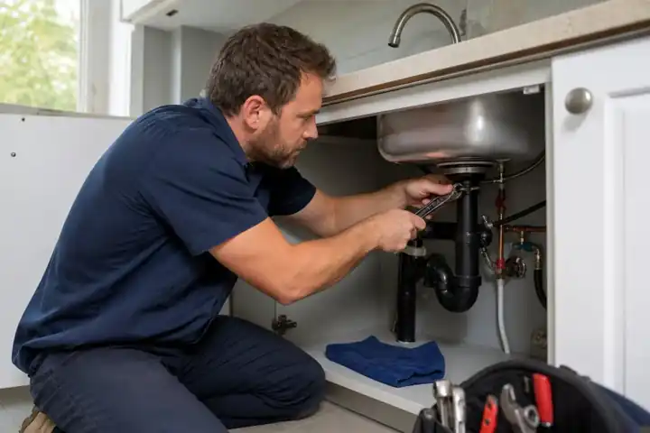
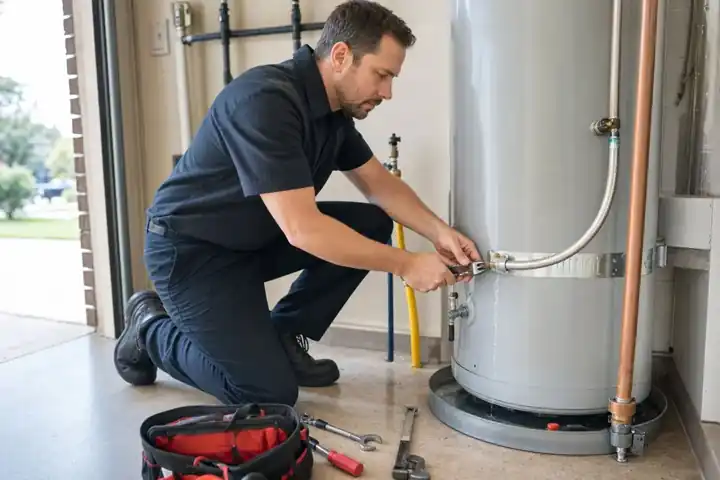
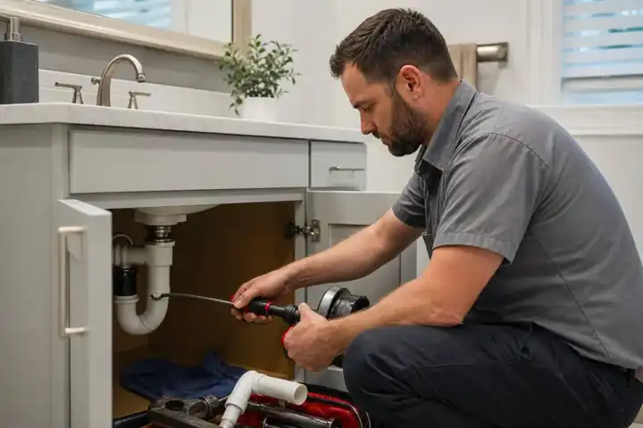
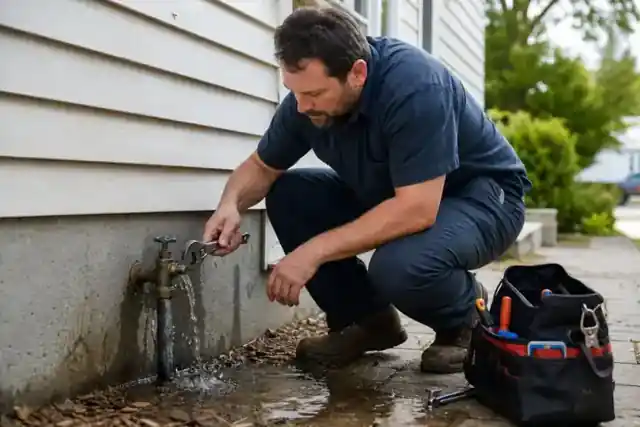

Emergency plumber in Hemet
The central page for urgent plumbing requests.
Urgent plumbing request help in Hemet
When water is spreading, a drain is backing up, or a fixture will not stop overflowing, the first job is to limit damage and get the right information to a local plumbing provider quickly.
Calls and forms are for plumbing request intake and connection assistance. Availability varies.
Emergency plumbing hub
Each page links to closely related problems and the safest next step.
The central page for urgent plumbing requests.
Reduce water damage and report the leak clearly.
Wet ground, low pressure, meter movement, and service-line clues.
Warning signs, safe first steps, detection considerations, and repair-request information.
Stains, soft drywall, odors, concealed water, and electrical cautions.
Supply lines, valves, traps, disposal connections, and cabinet flooding.
What to stop using and how to avoid wastewater exposure.
Multiple affected fixtures, active backups, and drain-product cautions.
Stop the bowl from rising and identify a deeper drain problem.
Faucet, disposal, dishwasher, drain, and cabinet leak clues.
Toilet, tub, shower, sink, supply-line, and lower-floor damage concerns.
Common leak locations plus gas and electrical cautions.
Safe checks, error codes, and signs that make the problem more urgent.
Fixture valves, the main shutoff, and when not to force a valve.
Evening, overnight, and weekend request preparation.
Understand what can change price without relying on fake fixed quotes.
Local emergency planning
Use a guide matched to the property and the person responsible for reporting, access, and repair decisions.
Safety, documentation, landlord notice, unit access, and request details.
A repeatable plan for managed properties, listings, apartments, and rental homes.
Clear first steps for local students, including renters attending Mt. San Jacinto College.
Shutoff, access, authorization, safety, and employee-reporting checklists.
Understand when to contact a plumbing provider, the City, or emergency services.
Find the closest safe valve and know when not to force damaged hardware.
Plumbers at work
These examples show the kinds of leaks, drain problems, shutoffs, and water-heater issues Hemet homeowners may need help describing.




Before help arrives
Use the nearest fixture valve when possible. For major uncontrolled flow, use the main shutoff only if you can reach it safely.
Do not enter standing water near outlets, panels, appliances, or extension cords.
During a backup, stop flushing toilets and running sinks, washers, showers, and dishwashers.
Note when it started, which fixtures are affected, whether water is clean or dirty, and whether the shutoff worked.
Plan your next step
An emergency request in Hemet CA should begin with what is happening right now. Explain whether the flow is continuing, whether a room is becoming unusable, and whether one fixture or several areas are affected. A small drip contained in a bucket presents a different situation from a ceiling that is becoming saturated or a toilet backing up into a shower.
You do not need to diagnose the cause before calling. Give the time the problem started, describe any change since then, and mention whether a valve has already been closed. These details help a professional understand the situation and ask useful follow-up questions. If the condition gets worse after you submit the form, explain that change when speaking with the provider.
Leak detection may be needed when damp flooring, staining, or an unexplained sound points to a concealed problem. Tell the plumber where you first noticed the symptom and whether it appears continuously or only when a fixture is used. Mention nearby bathrooms, laundry equipment, or an upstairs room without assuming any of them is the source.
For a Hemet CA property with a possible slab or wall leak, useful details include the affected room, the surface involved, and whether the area has grown since you first noticed it. Photos taken from a safe location can document the change. Ask the provider how they plan to locate the source and what access may be necessary before authorizing openings in walls or flooring.
Describe clogs by their pattern: a single slow sink, a toilet that repeatedly overflows, or several fixtures backing up at once. Tell the provider whether the problem occurs when another fixture drains. This helps distinguish the symptoms without treating a phone description as a confirmed diagnosis.
An emergency involving wastewater needs a clear account of where it is appearing and which rooms are affected. Mention any drain products already used, including the product name if available, so the person attending knows what may be present. Include earlier attempts to clear the blockage and whether they helped briefly. For recurring trouble, ask what inspection or follow-up may be appropriate after the immediate blockage is addressed.
A water heater problem is easier to describe when you separate a loss of hot supply from an active leak. State whether the unit is a tank or tankless model, whether it uses gas or electricity if you know, and where moisture is visible. Read an error message only if you can see it safely; there is no need to remove a cover to complete a request.
For an emergency call, mention whether the leak is spreading beyond the unit and whether nearby rooms are affected. An older heater does not automatically mean replacement is the only option. A provider needs to assess the source and condition before discussing suitable plumbing repair or replacement services. Ask what the proposed work includes and whether additional parts or another visit may be needed.
When requesting a plumber in Hemet CA, provide the complete address or useful cross streets, the unit number, and a callback number you can answer. Explain whether this is a house, apartment, rental, or workplace. Mention a locked gate, restricted parking, pets, or other access details that may affect a visit.
For rental properties, identify the owner or manager who can authorize work and explain any contact attempts already made. For a business, name the person who will meet the provider and approve the scope. These details help an emergency request move forward with fewer unanswered questions. If more than one person is coordinating the visit, agree on one contact so the provider receives consistent information about the problem and access.
Submitting an emergency request does not confirm a scheduled visit. Ask the responding provider whether they cover your address, what arrival window they can offer, and how they will contact you if plans change. Availability for evening, overnight, or weekend services must be confirmed directly.
Before authorizing work, ask whether there is a callout or diagnostic fee, what the assessment covers, and how any additional work will be approved. A professional should explain the proposed scope and the price you are being asked to accept. Clarify whether the visit addresses only the immediate problem or includes follow-up work. Keep the written estimate and final invoice together so you can refer back to the agreed service details.
When comparing services in Hemet CA, look for a clear explanation of the work offered. Ask a prospective plumber whether their services cover your particular fixture or system, and read recent reviews for details about communication and follow-up. During a plumbing emergency, confirm the provider's identity and the service being arranged before approving a visit. A professional serving Hemet should be able to explain who will attend and how to reach them afterward. If you need additional services, such as cleanup after the leak is stopped, ask whether these require a separate company. Keep your Hemet CA service contact and appointment details together.
Plumbing problem in Hemet?
Explain what is happening and where the water or backup is appearing.
Questions
No. A contained drip may be schedulable, while uncontrolled water, sewage, structural damage, or electrical danger usually deserves faster attention.
For a major uncontrolled leak, shutting off the main can limit damage. Use it only when the valve is accessible and the area is safe.
No. Provider availability, response time, pricing, licensing, and service decisions vary.
Yes, you can submit the form when you notice a problem. An emergency request still depends on a provider being available. Confirm the timing directly; sending a form or leaving a message does not mean someone has been dispatched.
Have your address, contact number, affected fixtures, and a short description of what changed. Explain any access restrictions and identify who can approve the work. If the situation has changed since your original request, give the latest details first.
The form collects details; it does not generate a quote. The responding provider determines pricing after discussing or inspecting the problem. Ask what is included in the proposed work and how any additional charges will be approved before work begins.
Prefer not to call?
Send the basic details below so the request can be reviewed and shared with an available provider.
For active flooding near electricity, sewage exposure, gas smells, fire, or immediate danger, contact emergency services or the appropriate utility first.